is a South Korean television series starring Lee Joon-gi, Son Hyun-joo, Moon Chae-won, Yoo Sun, Lee Sun-bin with Go Yoon and Kim Yeong-cheol. The drama is based on the American television series Criminal Minds. It was broadcast every Wednesday and Thursday from July 26, 2017, to September 28, 2017, on the cable channel tvN.
Scene Photo
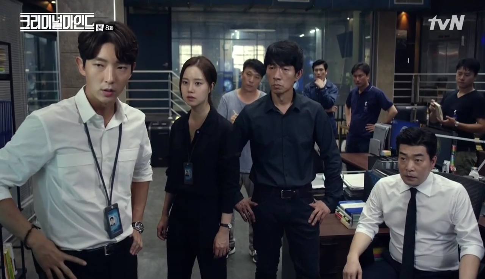 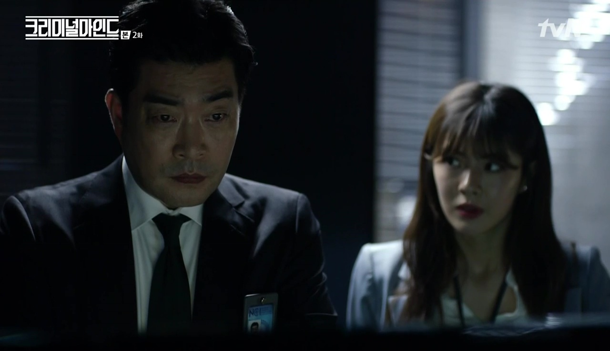 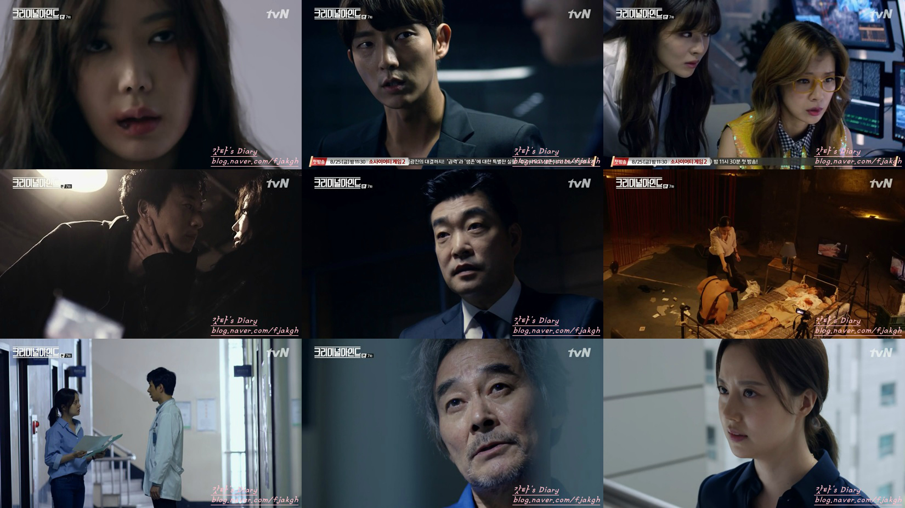 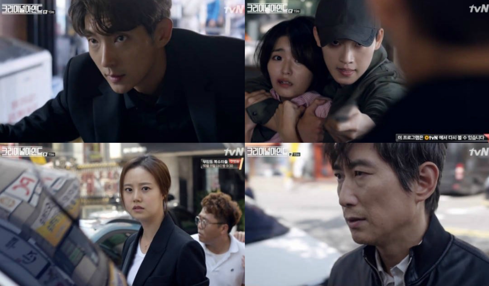Movie Info
The drama follows a group of highly trained profilers in the fictional National Criminal Investigation (NCI) team who track down criminals to solve cases.[3] It begins a year after a crucial error results in a bomb detonating at a hospital, killing several SWAT officers and leaving the NCI team leader Kang Ki-hyung's confidence badly shaken. He returns to work after a long break and is immediately drawn into a serial murder case which requires the NCI team to collaborate with the local police agency's Violent Crimes Unit. They meet the temperamental police officer Kim Hyun-joon, who appears to have a bitter grudge against Ki-hyung.
- Genre:Procedural and Action
- Director:Kang Shin-hyo, Boo Sung-chulYang Yoon-ho and Lee Jung-hyo (resigned)
- Writer:Hong Seung-Hyun , Andrew S. Wilder (original) and Bo Crese (original)
- Original Release: July 26 –September 28, 2017
- No. of Episodes: 20 Episodes
Cast
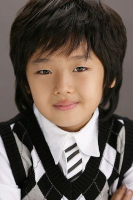 Lee Joon-gi as Kim Hyun-joon, Kang Yi-seok as teenaged Hyun-joonA second-generation police officer, he joined the NCI at the recommendation of Kang Ki-hyung.[4] He was initially a SWAT officer specializing in EOD who had transferred to the Violent Crimes Unit as an investigator after watching one of his subordinates die when a bomb their team was defusing exploded. He witnessed his father being murdered by a suspect when he was a child and has little sympathy for criminals.[5] His brash nature and temperament has put him at odds with Ki-hyung and Sun-woo at times but he quickly proves his worth with his attention to detail, sharp instincts and accurate profiling skills.[6] He is the equivalent of Derek Morgan, portrayed by Shemar Moore Down-to-earth and somewhat cynical, Eun-sang diligently works part-time jobs to support herself and her mother after her sister leaves for the U.S. She lives in Kim Tan's home, since her mother is a live-in housekeeper of the Kim family. She is enrolled in Jeguk High School on a welfare scholarship given by President Kim.
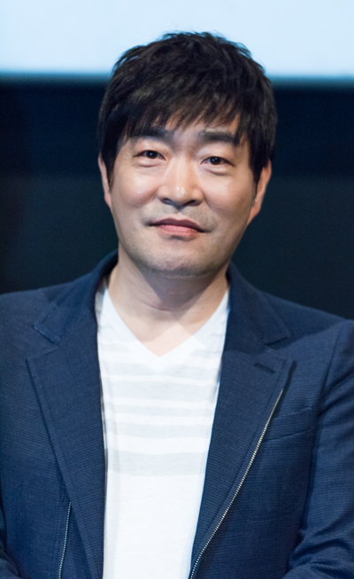 Son Hyun-joo as Kang Ki-hyungHe is the team leader and a veteran NCI profiler who has published a book on criminology. Despite his aloof and expressionless exterior he cares deeply for his team, whom he considers to be his second family.[4] He and his wife Seo Hye-won have a son named Han-byul. He is the equivalent of Aaron Hotchner, portrayed by Thomas Gibson
 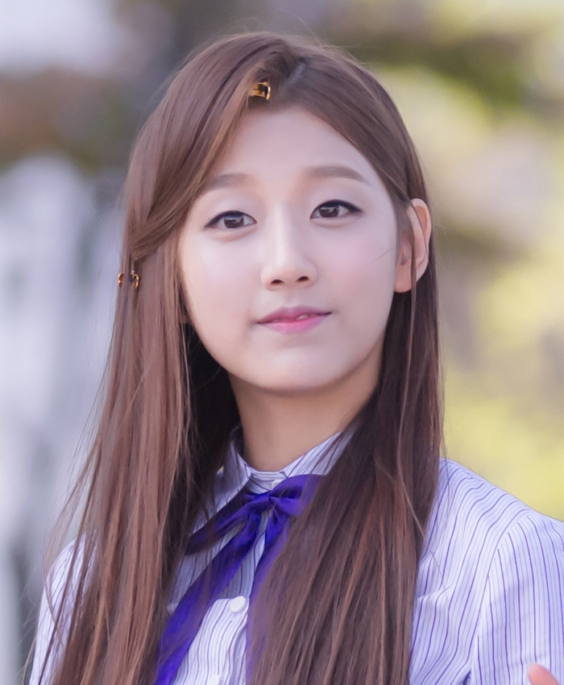
Moon Chae-won as Ha Sun-woo, Jeong Ye-in as teenaged Sun-woo
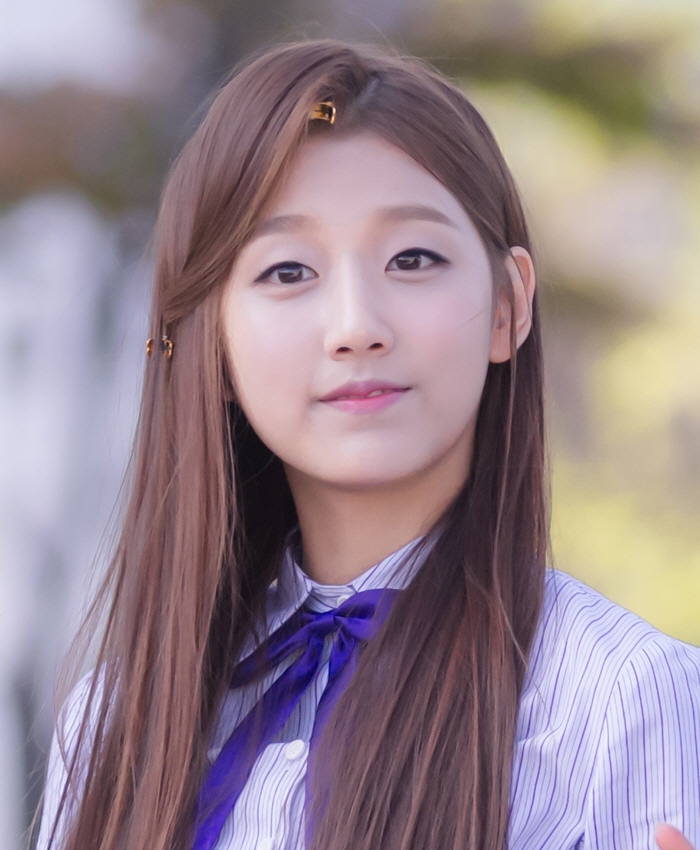
Moon Chae-won as Ha Sun-woo, Jeong Ye-in as teenaged Sun-woo
An NCI agent and behavior analyst, her gruff demeanor and exacting mannerisms cause some friction between her and Hyun-joon. She tends to follow protocol and goes by the book, in contrast to Hyun-joon. It is eventually revealed that it is her way of coping with the horrors she regularly witnesses on the job. Like Hyun-joon she is a former police officer. She was only hired to fulfill the female quota and relegated to desk jobs and running errands, which she said spurred her to work even harder to get to where she is now.[4] Her father is a well-known defense lawyer whose clients include members of the business and political elite but Sun-woo remains estranged from him due to the fact that he has bailed out some of the very people she arrested. She is the equivalent of Emily Prentiss, portrayed by Paget Brewster
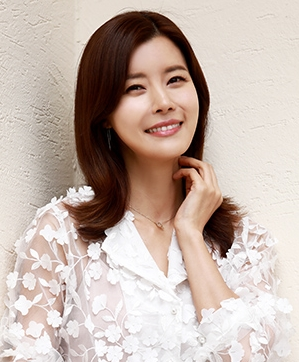 Yoo Sun as Nana HwangShe is the NCI's bubbly technical analyst who provides support from her computer. She is the equivalent of Penelope Garcia, portrayed by Kirsten Vangsness
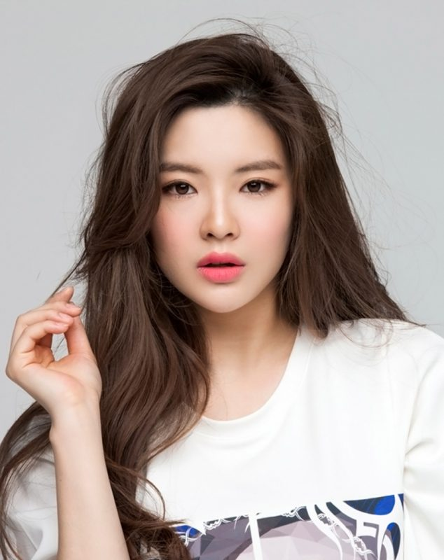 Lee Sun-bin as Yoo Min-youngShe is the NCI's media liaison officer and handles press conferences.[7] She has been the guardian of her orphaned niece Ha-eun since the deaths of her sister and brother-in-law. She is the equivalent of Jennifer "JJ" Jareau, portrayed by A.J Cook
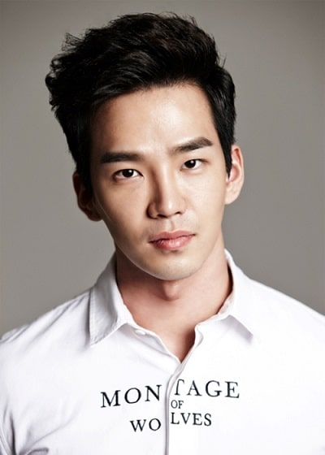 Go Yoon as Lee HanThe resident genius and holder of two doctorate degrees, he is a profiler who often follows the team to the field to analyze the crime scene or the suspect's house for further clues. He is socially awkward and has a tendency to spout encyclopedic facts at the wrong time. He is the equivalent of Spencer Reid Ph.D., portrayed by Matthew Gray Gubler
Production
- Executive producer(s):
- Jung Tae-won
The first script reading took place on April 7, 2017.[11] Principal photography started on April 17, 2017. The series was originally scheduled to be on KBS 2TV under Taewon Entertainment and NEW,[13][14] but was later picked up for broadcast by tvN as its owner CJ E&M's subsidiary Studio Dragon replaced NEW as co-producer. Kim Ah-joong was offered a role in the series. Lee Jung-hyo resigned from his position as one of the show's directors due to differences with Taewon Entertainment.